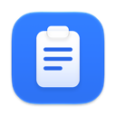

Datenschutz
Ablage – Zwischenablage für macOS
Kurz gesagt
Ablage erfasst keine personenbezogenen Daten, überträgt nichts ins Internet und enthält weder Werbung noch Analyse- oder Tracking-Werkzeuge.
Verantwortlich
Nico Schuler
E-Mail: UmlaufApp@proton.me
Welche Daten verarbeitet die App?
Ablage ist ein Verlauf für die Zwischenablage. Damit das funktioniert, liest die App neue Inhalte der Zwischenablage deines Macs – Text, Links, Bilder und Verweise auf Dateien – sowie den Namen der App, aus der kopiert wurde. Diese Daten werden ausschließlich lokal auf deinem Mac gespeichert, im geschützten Datenordner der App (App-Sandbox), und sind nur für deinen Benutzer lesbar.
Inhalte, die Apps als vertraulich kennzeichnen, und Kopien aus Passwort-Apps werden standardmäßig nicht gespeichert, soweit Ablage sie erkennen kann – aus Browser-Erweiterungen kopierte Passwörter nicht in jedem Fall.
Weitergabe
Es findet keine Weitergabe an den Entwickler oder an Dritte statt. Die App baut keine Netzwerkverbindungen auf.
Speicherdauer und Löschen
Der Verlauf enthält höchstens so viele Einträge, wie du in den Einstellungen festlegst; ältere Einträge werden automatisch gelöscht. Einzelne Einträge oder den ganzen Verlauf kannst du jederzeit in der App löschen. Der Datenordner ist von Time-Machine-Backups ausgenommen. Alle gespeicherten Daten liegen im Ordner ~/Library/Containers/de.ablage.Ablage und lassen sich vollständig entfernen, indem du ihn löschst.
Deine Rechte
Da keine Daten aus der App beim Entwickler ankommen, liegen dort auch keine Daten über dich vor. Bei Fragen zum Datenschutz erreichst du uns unter der oben genannten E-Mail-Adresse.
Diese Webseite
Diese Seite wird über GitHub Pages bereitgestellt. Beim Aufruf verarbeitet GitHub technisch notwendige Daten wie deine IP-Adresse, um die Seite auszuliefern und vor Missbrauch zu schützen. Einzelheiten stehen in der Datenschutzerklärung von GitHub. Diese Seite selbst verwendet keine Cookies und keine Analyse-Werkzeuge.
Privacy in short
Ablage collects no personal data, sends nothing to the internet and contains no ads, analytics or tracking.
What the app processes
Ablage keeps a history of your clipboard. To do so, it reads new clipboard contents – text, links, images and references to files – along with the name of the app you copied from. This data is stored only locally on your Mac, inside the app’s protected sandbox container, and is readable by your user account only. Content that apps mark as confidential and copies from password managers are not saved by default, as far as Ablage can detect them – passwords copied from browser extensions not in every case.
Nothing is shared with the developer or any third party, and the app makes no network connections. You can delete single entries or the whole history in the app at any time; all data lives in ~/Library/Containers/de.ablage.Ablage and is removed completely when you delete that folder. The data folder is excluded from Time Machine backups.
Contact
For privacy questions, contact Nico Schuler at UmlaufApp@proton.me. This page is hosted on GitHub Pages; GitHub processes technical data such as your IP address to deliver it (see GitHub’s privacy statement). The page itself uses no cookies or analytics.